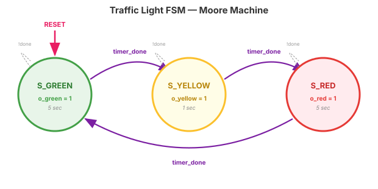
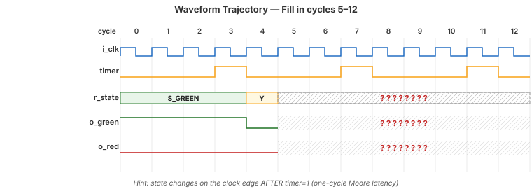
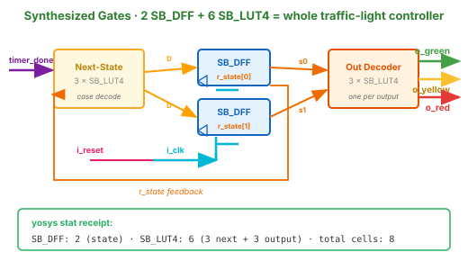

Every elevator. Every traffic light. Every microwave. Every washing
machine that pauses mid-cycle when you open the lid. Every coffee
maker that knows “brewing” from “waiting.” Every ATM that decides
“card inserted, now expecting PIN.” Every game character that walks,
jumps, or attacks depending on what it was doing a moment before.
When it goes wrong
Therac-25 delivered lethal radiation doses to multiple patients in
the 1980s because a specific keystroke sequence pushed the machine
into a configuration its designers had never enumerated. The 2003
Northeast blackout cascaded across eight US states partly because
an alarm system entered a condition operators didn't know existed.
Career tag: “FSM design” and “control-path verification” appear
in ~90% of entry-level digital-design job postings. The FPGA/ASIC hiring bar
assumes you can write a clean 3-block FSM on a whiteboard in under 5 minutes.
⚠️ If You're Thinking Like a Programmer…
❌ Wrong Model
“An FSM is just a big switch statement inside a
while(true) loop. I'll cram it all into one always
block with nested ifs and it'll work.”
✓ Right Model
An FSM is three pieces of physical hardware:
a state register (flip-flops), combinational next-state logic,
combinational output logic. All three exist simultaneously.
The case statement describes — it does not execute.
Why this matters: The “one big always block”
instinct is the #1 source of inferred latches, race conditions,
and sim/synthesis mismatches in early FSMs. We'll see a real example in today's demo.
What Is a Finite State Machine?
An FSM is a sequential circuit defined by:
A finite set of states (always in exactly one)
Transitions governed by input conditions
Outputs that depend on state (and possibly inputs)
Three states. Three outputs. One timer input. Here's the state diagram:

My thinking: I named states by what they mean, not by number.
S_GREEN is more useful than S0 in a waveform trace.
Outputs are inside each state bubble — that's the Moore convention.
🤝 We Do — Predict the Trajectory
Given the FSM below (timer fires every 4 cycles), fill in cycles 5–12 of the waveform.
FSM (reference)

Answer:
state: G,G,G,G, Y,Y,Y,Y, R,R,R,R, G.
o_green: 1,1,1,1,0,0,0,0,0,0,0,0,1.
Key observation: the state changes on the clock edge aftertimer=1
— outputs follow state, not timer. That one-cycle latency is Moore's signature.
🧪 You Do — Before We Run It
Take 60 seconds. Without looking at code, predict:
How many flip-flops will Yosys use for the state register?
Will the total flop count be less than, equal to, or greater than 3?
What should the GTKWave trace of r_state look like if we
dump it as ASCII (Hint: you'll see the state names).
Predictions:
⌈log₂(3)⌉ = 2 flops (binary encoding — or 3 flops if Yosys picks one-hot).
· Total flops: exactly equal to state flops (no counters yet in this minimal version).
· Trace: S_GREEN (4 cycles) → S_YELLOW (4) →
S_RED (4), repeating.
cd lecture_examples/week2_day07/d07_s2_ex1/
make sim # iverilog + vvp (module: traffic_light)
make wave # GTKWave on tb_traffic_light.vcd
make stat # yosys synth_ice40 + stat
Signal order: i_clk · i_rst · i_timer_done · r_state · o_red · o_yellow · o_green.
Right-click r_state → Data Format → ASCII to see
S_GREEN etc. instead of 0/1/2. Watch for the
1-cycle delay between i_timer_done rising and r_state changing.
🔧 What Did the Tool Build?
Running make stat on the traffic light — and the gates behind that count:
$ yosys -p "read_verilog day07_ex01_fsm_template.v; \
synth_ice40 -top traffic_light; stat" -q
=== traffic_light ===
Number of wires: 12
Number of cells: 8
SB_DFF 2 ← state register
SB_LUT4 6 ← next-state + output
3 states → ⌈log₂3⌉ = 2 flops ✓
Yosys chose binary encoding (default on iCE40)
6 LUTs: ~3 next-state · ~3 output decoding
Red flag:≥4 flops → inferred latch.

Signals colored to match Block-template code on Video 2
Generate this yourself:yosys -p "read_verilog day07_ex01_fsm_template.v; synth_ice40 -top traffic_light; show -format svg -prefix fsm_synth"
— produces fsm_synth.svg showing the actual gates and flops Yosys built.
🤖 Check the Machine
Ask an AI assistant:
“Given this 3-state traffic light FSM in Verilog, what happens if I remove
the default assignment r_next = r_state; from the top of Block 2?”
TASK
Paste the code to the AI with the default line removed.
BEFORE
Your prediction: “Simulation still works, every state case is covered.”
AFTER
AI should flag: without default, the case incompletely assigns r_next in some paths → latch inferred.
TAKEAWAY
Yosys reports the same via synth_ice40 -verbose. AI catches it from code alone.
Rule: AI is never your first step. Predict first, simulate,
then ask AI to explain anything surprising. If AI contradicts your simulation,
trust the simulation — then figure out why the AI was wrong. That's where
the real learning lives.
Key Takeaways
① FSM = states + transitions + outputs. State is memory.
② Moore (outputs = f(state)) is our default — clean timing, easier to debug.
③ FSMs are three pieces of hardware: state reg + next-state logic + output logic.
④ Flop count should equal ⌈log₂(states)⌉. Extra flops = latch trouble.
One always block per hardware piece. One hardware piece per always block.
🔗 Transfer
The 3-Always-Block Template
Topic 7, Video 2 of 4 · ~15 minutes
▸ WHY THIS MATTERS NEXT
You just saw an FSM is three hardware pieces. In Video 2 you'll learn the
Verilog template that keeps those three pieces separated — one
always block per piece. This isn't just style: it's the coding
pattern that prevents the #1 FSM bug (inferred latches) and makes your FSMs
synthesize cleanly on both FPGA and ASIC targets. Every FSM you write for
the rest of this course (UART, memory test, capstone) uses this template.